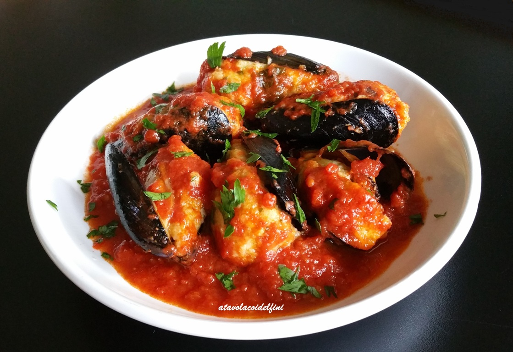

Cozze Ripiene
Le cozze ripiene al sugo di pomodoro sono una vera delizia per gli amanti delle cozze: il sapore intenso della cozza si sposa con un ripieno morbidissimo di uova, che viene poi ulteriormente esaltato dalla bontà del sugo di pomodoro!
Vai alla ricetta